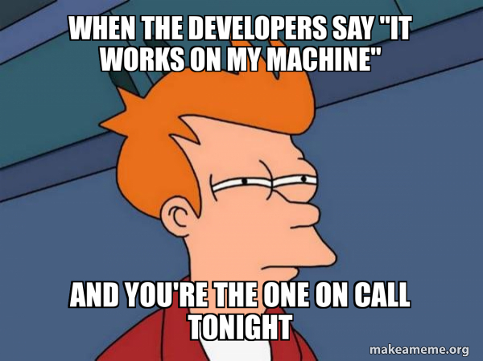
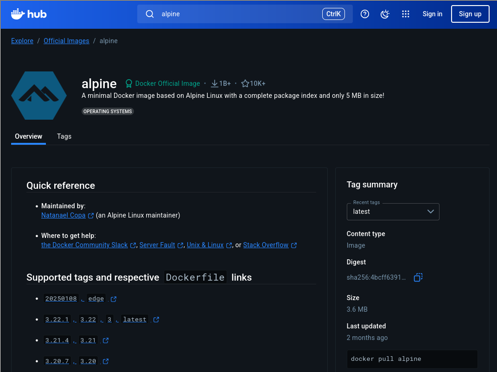

name: title layout: true class: cover --- count: false .section-mark.center[ <a href="https://oesteban.github.io/isc-hei-302/week1/day2/index.html"> <object type="image/svg+xml" data="images/qr-talk-url.svg" style="width: 20%"></object> <br /> https://oesteban.github.io/isc-hei-302/week1/day2/index.html </a> <br /> <br /> ## DevOps and Docker Oscar Esteban <<code>oscar.esteban@hevs.ch</code>> <br /> ### 302 Data computation (week 1, day 2) — 18.09.2025 ] ??? --- class: roulette-config .roulette-roster[ # Class roster (for roulettes) <div class="rr-config-wrap"> <div class="rr-col"> <label>Attendees (one per line)</label> <div contenteditable="true" role="textbox" aria-multiline="true" data-roulette="attendees" data-gramm="false" data-gramm_editor="false" data-lt-active="false" data-lpignore="true" spellcheck="false" class="notranslate" style="white-space: pre-wrap; min-height: 240px; padding: .5rem; border: 1px solid #ccc; border-radius: 6px;"><!-- -->Amina El-Sayed Amir Haddad Chiamaka Okafor Ayodeji Adeyemi Selamawit Tesfaye Zhihao Chen Thảo Nguyễn Arjun Singh Sofía Álvarez Dmitry Volkov Agnieszka Nowak João Pereira Leilani Kealoha Diego Quispe Yael Levi Tāne Rangi Zehra Yılmaz Ethan Johnson </div> <div class="rr-col"> <label>Organizers (one per line)</label> <div contenteditable="true" role="textbox" aria-multiline="true" data-roulette="organizers" data-gramm="false" data-gramm_editor="false" data-lt-active="false" data-lpignore="true" class="notranslate" spellcheck="false" style="white-space: pre-wrap; min-height: 240px; padding: .5rem; border: 1px solid #ccc; border-radius: 6px;"></div> </div> </div> ] --- name: title count: false counter: false .section-mark.center[ <a href="https://oesteban.github.io/isc-hei-302/week1/day2/index.html"> <object type="image/svg+xml" data="images/qr-talk-url.svg" style="width: 20%"></object> <br /> https://oesteban.github.io/isc-hei-302/week1/day2/index.html </a> <br /> <br /> ## DevOps and Docker Oscar Esteban <<code>oscar.esteban@hevs.ch</code>> <br /> ### 302 Data computation (week 1, day 2) — 18.09.2025 ] ??? --- name: newsection layout: true .perma-sidebar[ <p class="rotate"> <a rel="license" href="http://creativecommons.org/licenses/by/4.0/"><img alt="Creative Commons License" style="border-width:0; height: 20px; padding-top: 6px;" src="https://i.creativecommons.org/l/by/4.0/88x31.png" /></a> <span style="padding-left: 10px; font-weight: 600;">DevOps and Docker (18.09.2025)</span> </p> ] --- # Objectives .boxed-content.larger.no-bullet[ * .larger[<i class="fa-solid fa-circle-right"></i> Solve problems with **containers**] <br /> .indent[.gray-text[and describe the differences with virtual machines]] <br /> * .larger[<i class="fa-solid fa-circle-right"></i> Explain the *Docker* **containers** and **images**] <br /> .indent[.gray-text[including layers, Dockerfile, and registries]] <br /> * .larger[<i class="fa-solid fa-circle-right"></i> Build *Docker* **images** and edit the `Dockerfile`] <br /> .indent[.gray-text[understanding layer caching and multi-stage builds]] <br /> * .larger[<i class="fa-solid fa-circle-right"></i> Execute commands in *Docker* **containers**] <br /> .indent[.gray-text[applying volume mounts, networking, and user mapping]] <br /> * .larger[<i class="fa-solid fa-circle-right"></i> Use *Docker compose* to orchestrate containers] <br /> .indent[.gray-text[and deploy a basic *Apache Airflow* environment]] <br /> * .larger[<i class="fa-solid fa-circle-right"></i> Establish a functional **Docker environment**.] <br /> .indent[.gray-text[Execute processing tasks on a laptop given a Docker environment with a prepared Jupyter notebook.]] ] --- .boxed-content.program-table[ | Time | Content | |:--:|:--| | 8h15 | Quick quiz (**not graded**). | | 8h35 | **Roulette**: What do you know/want to know about containers? | | 9h05 | .gray-text[Break] | | 9h15 | **Intro&challenge**: the first `Dockerfile` | | 9h45 | **Intro&challenge**: the neuroimaging container | | 10h05 | .gray-text[Short break] | | 10h15 | **Challenge**: Exploring the neuroimaging container. | <!-- 11h15 evaluation of challenge: groups present their progress --> | 11h45 | .gray-text[Lunch break] | | | | | 12h45 | **Group use-case**: Docker compose | | 15h20 | Quick quiz (repetition) | | 15h35 | Discussion of quiz & **outlook** for next session | | 15h50 | Voluntary time | | 16h10 | .gray-text[End] | ] --- .section-mark[ # Quick quiz .large[20 minutes, not graded] ] --- class: roulette time: 45 # Roulette .boxed-content[ .pull-right.large[ What do you know/want to know about containers? .no-bullet.gray-text[ * <i class="fa-solid fa-ranking-star"></i> Benefits/strengths/interest * <i class="fa-solid fa-triangle-exclamation"></i> Problems/caveats/gaps * <i class="fa-solid fa-circle-question"></i> Questions * <i class="fa-solid fa-comment"></i> Opinions/remarks/comments/discussion ] ] .pull-left[ > <br /> > — Your code doesn't work. > <br /> > — It works on my machine! > <br /> > — Then pack that machine and ship it to the client. .center[  ] ] ] ??? Reasons why 'it works [only] on my machine': * One or more files are missing (meaning, the installation is not reproducible). * Software versions mismatch (e.g., Python 3.8 vs 3.10, or a dependency). * Different settings: * Environment variables different or not set (e.g., `PATH`, `PYTHONPATH`, etc.). * Configuration files * Permissions * Platform specific settings (e.g., slightly different hardware) Examples of why: * Deployment on production * A new recruit joins the team * Version control of deployiment settings (`Dockerfile`) --- .section-mark[ # Short break .large[We reconvene .timer[in 10 minutes].] ] --- # What's Docker? .boxed-content.larger[ > Docker is a set of [platform as a service](https://en.wikipedia.org/wiki/Platform_as_a_service) (PaaS) products that use [OS-level virtualization](https://en.wikipedia.org/wiki/OS-level_virtualization) to deliver software in packages called [containers](https://en.wikipedia.org/wiki/Container_%28virtualization%29). > <br /> > <br /> > (...) > <br /> > <br /> > Docker is a tool that is used to automate the **deployment** of **applications** in lightweight **containers** so that applications can work efficiently in different environments in isolation. .align-right.small[ [Wikipedia](https://en.wikipedia.org/wiki/Docker_%28software%29) ] ] ??? --- count:false # What's Docker? .boxed-content.larger[ > Docker is a set of [platform as a service](https://en.wikipedia.org/wiki/Platform_as_a_service) (PaaS) products that use [OS-level virtualization](https://en.wikipedia.org/wiki/OS-level_virtualization) to deliver software in packages called [containers](https://en.wikipedia.org/wiki/Container_%28virtualization%29). > <br /> > <br /> > (...) > <br /> > <br /> > Docker is a tool that is used to automate the **deployment** of **applications** in lightweight **containers** so that applications can work efficiently in different environments in isolation. .align-right.small[ [Wikipedia](https://en.wikipedia.org/wiki/Docker_%28software%29) ] .large.center[ **Consistently** build, run and ship applications. ] ] ??? This is why companies --- # Containers vs. virtual machines .boxed-content.center[ <img src="https://wac-cdn.atlassian.com/dam/jcr:92adde69-f728-4cfc-8bab-ba391c25ae58/SWTM-2060_Diagram_Containers_VirtualMachines_v03.png" style="width: 100%; padding-top: 20px;"/> .align-right.small[ Source: [Atlassian](https://www.atlassian.com/microservices/cloud-computing/containers-vs-vms) ] ] ??? * Containers share the host OS kernel, and isolate the application processes from the rest of the system. * Virtual machines simulate the physical hardware and install a full OS stack with its own kernel. BOTH run apps on isolated environments. **Hypervisor**: software layer that leverages hardware (directly—type 1,—or through the OS—type 2) virtualization to create and run virtual machines. * VirtualBox (type 2, cross-platform) * VMware (type 2, cross-platform) * KVM (type 2, Linux) * bhyve (type 2, FreeBSD) * Parallels (type 2, macOS) * Xen (type 1, Linux) * VMware ESXi (type 1, server) * Hyper-V (type 1, Windows) --- count: false # Containers vs. virtual machines .boxed-content.center[ <img src="https://wac-cdn.atlassian.com/dam/jcr:92adde69-f728-4cfc-8bab-ba391c25ae58/SWTM-2060_Diagram_Containers_VirtualMachines_v03.png" style="width: 100%; padding-top: 20px;"/> .align-right.small[ Source: [Atlassian](https://www.atlassian.com/microservices/cloud-computing/containers-vs-vms) ] > — It works on my (virtual) machine ] ??? In terms of deployment, unless you ship the whole VM image (which is large and may not be portable to the new hardware), we still may hit 'it works on my (virtual) machine'. Main caveats of VMs vs containers—each VM needs a full OS: * Heavy (GBs) * Slow to boot (minutes) * More resource hungry (RAM, CPU). Eg., 2 VMs with 2GB RAM each on a host with 4GB RAM will likely lead to swapping and very poor performance. * More HPC-friendly (though, Docker is generally not found in HPC settings) Benefits of VMs vs containers—each VM is fully isolated: * More secure (stronger isolation) --- .boxed-content[ <div class="asciicast" id="docker-whalesay" style="padding-top: 25px"></div> ] ??? Image = immutable filesystem + metadata. Container = runtime instance of an image. Whalesay works the same in all your computers. --- # The first Dockerfile (`oesteban/whalesay`) .boxed-content[ .large[ ```dockerfile FROM alpine RUN apk add --no-cache perl COPY cowsay /usr/local/bin/cowsay COPY docker.cow /usr/local/share/cows/default.cow ENTRYPOINT ["/usr/local/bin/cowsay"] ``` [`FROM`](https://docs.docker.com/reference/dockerfile/#from) indicates a base image (`alpine`) [`RUN`](https://docs.docker.com/reference/dockerfile/#run) executes commands in the image being built (`apk add`) [`COPY`](https://docs.docker.com/reference/dockerfile/#copy) copies files from the build context into the image [`ENTRYPOINT`](https://docs.docker.com/reference/dockerfile/#entrypoint) configures a container that will be run from the image ]] ??? How this recipe translates into natural language: > Start with an alpine linux distribution. > Install perl without caching installation files (to save space) > Copy the `cowsay` perl script into the image, at `/usr/local/bin/cowsay` > Copy the `docker.cow` with the cow template in the image, at the right path > Tell the Docker runtime to execute `/usr/local/bin/cowsay` when it is invoked. --- .boxed-content[ <div class="asciicast" id="docker-build" style="padding-top: 25px"></div> ] ??? --- class: group-roulette groups: 5 seed: 18.09.2025 <br /> # **Group Challenge** .boxed-content[ <p style="padding: 20px 0 20px;"> .text-gray.large[Edit the example to create the coolest *chatty cow*.] </p> ] ??? Tip: existing cows: https://github.com/paulkaefer/cowsay-files/tree/main/cows Bonus: use mounting to change the cow at run time. --- # Docker Hub .boxed-content.larger.no-bullet[ * .large[<i class="fa-solid fa-circle-right"></i> Where did `alpine` come from?] <br /> .indent[From the *Docker Hub*: https://hub.docker.com/_/alpine] .center[] ] ??? Exercise: search for (and pull) interesting images such as ubuntu, or python/node images. --- # Demystifying multi-stage builds .boxed-content.center[ <img src="https://media2.dev.to/dynamic/image/width=1000,height=420,fit=cover,gravity=auto,format=auto/https%3A%2F%2Fcdn.sanity.io%2Fimages%2Fceg39lx4%2Fproduction%2Fdef396ac1d42cd9f1d4a83647a597976e2951618-1364x720.png" style="padding-top: 60px" /> ] --- # Demystifying multi-stage builds: neuroimaging image First image, the `downloader`: ```Dockerfile # Argument (variable) to easly change base image ARG BASE_IMAGE=ubuntu:jammy-20240125 # Image for creating neuroimaging docker images FROM ${BASE_IMAGE} as downloader # Cache buster: change date to force rebuild of all derived images RUN echo "2024.03.18" # Install basic necessary software RUN apt-get update && \ DEBIAN_FRONTEND=noninteractive \ apt-get install -y --no-install-recommends \ binutils \ bzip2 \ ca-certificates \ curl \ unzip && \ apt-get clean && rm -rf /var/lib/apt/lists/* /tmp/* /var/tmp/* ``` --- count: false .boxed-content[ Second image: derive from the `downloader` image an image for the AFNI neuroimaging toolbox: .small[ ``` FROM downloader as afni RUN echo "2024.03.18" # Cache buster RUN mkdir -p /opt/afni-latest \ && curl -fsSL --retry 5 https://afni.nimh.nih.gov/pub/dist/tgz/linux_openmp_64.tgz \ | tar -xz -C /opt/afni-latest --strip-components 1 \ --exclude "linux_openmp_64/*.gz" \ --exclude "linux_openmp_64/funstuff" \ --exclude "linux_openmp_64/shiny" \ --exclude "linux_openmp_64/afnipy" \ --exclude "linux_openmp_64/lib/RetroTS" \ --exclude "linux_openmp_64/lib_RetroTS" \ --exclude "linux_openmp_64/meica.libs" \ # && /opt/afni-latest/@update.afni.binaries -package linux_openmp_64 -do_extras -quiet \ # Keep only what we use && find /opt/afni-latest -type f -not \( \ -name "3dAFNItoNIFTI" \ -or -name "3dAutomask" \ -or -name "3dcalc" \ -or -name "3dFWHMx" \ -or -name "3dinfo" \ -or -name "3dmaskave" \ -or -name "3dSeg" \ -or -name "3dSkullStrip" \ -or -name "3dTnorm" \ -or -name "3dToutcount" \ -or -name "3dTqual" \ -or -name "3dTshift" \ -or -name "3dTstat" \ -or -name "3dUnifize" \ -or -name "3dvolreg" \ -or -name "afni" \ \) -delete ``` ] ] --- counter: false .boxed-content[ Third, use an image from DockerHub to derive a Python distribution. We start installing dependencies. .small[ ``` FROM nipreps/miniconda:py39_2403.0 ARG DEBIAN_FRONTEND=noninteractive ENV LD_LIBRARY_PATH="/usr/lib/x86_64-linux-gnu:${CONDA_PATH}/lib" ENV CONDA_PATH="/opt/conda" # Configure PPAs for libpng12 and libxp6 RUN GNUPGHOME=/tmp gpg --keyserver hkps://keyserver.ubuntu.com --no-default-keyring --keyring /usr/share/keyrings/linuxuprising.gpg --recv 0xEA8CACC073C3DB2A \ && GNUPGHOME=/tmp gpg --keyserver hkps://keyserver.ubuntu.com --no-default-keyring --keyring /usr/share/keyrings/zeehio.gpg --recv 0xA1301338A3A48C4A \ && echo "deb [signed-by=/usr/share/keyrings/linuxuprising.gpg] https://ppa.launchpadcontent.net/linuxuprising/libpng12/ubuntu jammy main" > /etc/apt/sources.list.d/linuxuprising.list \ && echo "deb [signed-by=/usr/share/keyrings/zeehio.gpg] https://ppa.launchpadcontent.net/zeehio/libxp/ubuntu jammy main" > /etc/apt/sources.list.d/zeehio.list # Dependencies for AFNI; requires a discontinued multiarch-support package from bionic (18.04) RUN apt-get update -qq \ && apt-get install -y -q --no-install-recommends \ ed \ gsl-bin \ libglib2.0-0 \ libglu1-mesa-dev \ libglw1-mesa \ libgomp1 \ libjpeg62 \ libpng12-0 \ libxm4 \ libxp6 \ netpbm \ tcsh \ xfonts-base \ xvfb \ && curl -sSL --retry 5 -o /tmp/multiarch.deb http://archive.ubuntu.com/ubuntu/pool/main/g/glibc/multiarch-support_2.27-3ubuntu1.5_amd64.deb \ && dpkg -i /tmp/multiarch.deb \ && rm /tmp/multiarch.deb \ && apt-get install -f \ # CODE CONTINUES A LITTLE LONGER, see original file ``` ] ] --- counter: false .boxed-content[ Fourth, we now ensure a sutable environment is created from the AFNI image. ``` ENV AFNI_DIR="/opt/afni" # -------------------------------------------------------------------------------- Key section COPY --from=afni /opt/afni-latest ${AFNI_DIR} # <- We can copy from another image # -------------------------------------------------------------------------------- ENV PATH="${AFNI_DIR}:$PATH" \ AFNI_IMSAVE_WARNINGS="NO" \ AFNI_MODELPATH="${AFNI_DIR}/models" \ AFNI_TTATLAS_DATASET="${AFNI_DIR}/atlases" \ AFNI_PLUGINPATH="${AFNI_DIR}/plugins" # Install ANTs (Advanced Normalization ToolS) from conda-forge RUN micromamba install -n base -c conda-forge "ants=2.5" \ && sync \ && micromamba clean -afy; sync \ && ldconfig # Install additional Python software: images visualizer and Jupyter RUN python -m pip install ipyniivue jupyter ``` ] --- counter: false .boxed-content[ (5) Create a user `databot` so the container is not logged in as root (default). ``` # Create a shared $HOME directory RUN useradd -m -s /bin/bash -G users databot WORKDIR /home/databot ENV HOME="/home/databot" USER databot # Pacify datalad RUN git config --global user.name "302 data computation" \ && git config --global user.email "302@hes-so.ch" RUN micromamba shell init -s bash ENV PATH="${CONDA_PATH}/bin:$PATH" \ CPATH="${CONDA_PATH}/include:$CPATH" \ LD_LIBRARY_PATH="${CONDA_PATH}/lib:$LD_LIBRARY_PATH" ``` ] --- counter: false .boxed-content[ (6) Finally, download some data and install our app's code ```Dockerfile # Install a dataset (ds000005) from the OpenNeuro portal, and get one image RUN mkdir $HOME/data $HOME/outputs \ && datalad clone https://github.com/OpenNeuroDatasets/ds000005 $HOME/data/ds000005 \ && datalad get -d $HOME/data/ds000005 $HOME/data/ds000005/sub-01/anat/sub-01_T1w.nii.gz # Make a permanent cd into /home/databot/work WORKDIR /home/databot/work # Insert our code into the container COPY brain_mri_pipeline.ipynb . # Make the container listen to port 8888 (like opening a port on a firewall) EXPOSE 8888 # Execute this command AND arguments (see differences with ENTRYPOINT, that takes all args) CMD ["jupyter", "notebook", "--ip=0.0.0.0", "--port=8888", "--no-browser", "--allow-root"] ``` ] --- # Ready to run .boxed-content.no-bullet[ * .large[<i class="fa-solid fa-circle-right"></i> Recap of execution:] .indent.large[ ``` Python docker run --rm -it -p 8888:8888 oesteban/neuropipeline-302 ``` * `oesteban/neuropipeline-302` is the image name * `--rm` removes the container after exiting * `-it` interactive terminal * `-p 8888:8888` maps port 8888 in the container to port 8888 on the host ] * .large[<i class="fa-solid fa-circle-right"></i> Once the container is spun up, the output will show a URL to access the Jupyter notebook server.] ] ??? --- # Ready to run (suggestions) .boxed-content[ .large[ Communicate host and container filesystems: ```Bash mkdir -p work outputs docker run --rm -it -p 8888:8888 \ -v "$PWD/work":/home/databot/work \ -v "$PWD/outputs":/home/databot/outputs \ -u $(id -u):$(id -g) \ --name neuro302 \ oesteban/neuropipeline-302 ``` ] On another terminal: .large[ ```Bash docker exec -it neuro302 bash -lc 'id; ls -l /home/databot' ``` ] ] --- .section-mark[ # Short break .large[We reconvene .timer[in 10 minutes].] ] --- class: group-roulette groups: 5 seed: 18.09.2025 <br /> # **Group Challenge** .boxed-content[ <p style="padding: 20px 0 20px;"> .text-gray.large[Investigate the `oesteban/neuropipeline-302` image.] </p> ] ??? - Draw the main paths (data, code, results) on a whiteboard/notebook - Play with datalad to get more data - Expose the jupyter notebook so changes on the notebook are retained in the host - Play with detaching from the container and reconnecting (remove `--rm and -it`) - Try to run two containers in parallel (remove `--rm`). - Get creative and play --- .section-mark[ # Lunch break .large[We reconvene in <span class="timer">1 hour</span>.] ] --- # Group use-case .boxed-content[ .small[ > Samira, the most valued employee at your company *We build stuff s.a.r.l.*, left one week ago for Meta. > The CTO tried hard to keep her, but the offer was just too good to reject. <br /><br /> > Now the company is in trouble: the largest client needs a solution to build, manage and execute neuroimaging pipelines. > The CTO had discussed this with Samira, and he vaguely remembers a conversation with her... <br /> > — ... that they could easily use *Docker compose* (whatever that means)... <br /> > — ... to *orchestrate* different *Docker images* with neuroimaging software... <br /> > — ... and create and execute those pipelines with a *Docker container* running *Apache Airflow* with DAGs that use the *DockerOperator*. <br /><br /> > The one thing the CTO knows is that **your team has 2h to implement this**. ] .large[After those 2h, your team will have 7-8 minutes to show their progress] ] --- count: false class: group-roulette groups: 5 seed: 18.09.2025 .boxed-content[ # Group use-case .large[ Understand *Docker compose*, run *Apache Airflow* and enable it to use the `oesteban/neuropipeline-302` image. We reconvene in .timer[2h]. ] ] --- .section-mark[ # Quick quiz (repeat) .large[20 minutes, not graded] ] --- .section-mark[ # Concluding .large[Discuss the quiz answers and outlook for next session] ] --- .section-mark[ # End .large[ See you next time: 22.09.2025 @ 8h15 (in <span class="timer" data-until="2025-09-22T08:15:00+02:00"></span>) [<i class="fa-solid fa-circle-left"></i>](../../week1/day1/index.html) [<i class="fa-solid fa-home"></i>](#1) [<i class="fa-solid fa-circle-right"></i>](../../week2/day1/index.html) ] ]